Craig Mazin
Criador de Chernobyl (HBO). Co-criou a série e hoje é o único showrunner, roteirista da 3ª temporada e diretor de sua estreia.
Criada por Craig Mazin e Neil Druckmann, a adaptação da HBO estreou em 2023 e se tornou a temporada de estreia mais vista da história do canal.
Os resumos dos episódios ficam recolhidos — abra só se não tiver medo de spoilers.
Vinte anos após a pandemia, Joel é contratado para tirar Ellie da zona de quarentena de Boston. O que começa como um trabalho simples vira uma jornada brutal — e uma relação de pai e filha.
Austin, 2003: o surto começa e Joel perde a filha, Sarah. Vinte anos depois, em Boston, ele e Tess aceitam levar Ellie até os Vaga-lumes.
A travessia pelas ruínas de Boston revela os estaladores — e o preço da missão para Tess.
Um desvio da história do jogo: duas décadas da vida de Bill e Frank, uma das histórias de amor mais elogiadas da TV.
Em Kansas City, Joel e Ellie viram alvo de um grupo rebelde liderado por Kathleen.
Henry e Sam se unem à dupla, até que uma horda de infectados emerge do subsolo.
Em Jackson, Wyoming, Joel reencontra Tommy e encara o próprio medo de falhar com Ellie.
Um flashback mostra a noite de Ellie e Riley em um shopping abandonado.
No inverno, Ellie precisa proteger Joel ferido e enfrenta David, líder de uma comunidade perturbadora.
O nascimento de Ellie é revelado e, em Salt Lake City, Joel toma a decisão que muda tudo.
Joel e Ellie vivem em Jackson, mas a relação está estremecida. A chegada de Abby e de um grupo vindo de Seattle desencadeia um ciclo de vingança que leva Ellie e Dina até o noroeste do país.
Jackson prospera, mas Joel e Ellie mal se falam. Longe dali, Abby e seus amigos planejam algo.
Uma horda ataca Jackson enquanto Abby finalmente encontra quem procurava.
Meses depois, Ellie decide partir para Seattle — e Dina vai junto.
Em Seattle, a dupla descobre a guerra entre a FLW de Isaac e os Serafitas.
A caça a Nora leva Ellie a um hospital tomado por esporos e espreitadores.
Em flashbacks, os aniversários de Ellie ao longo dos anos e a conversa na varanda com Joel.
Ellie chega ao aquário e o final prepara o terreno para contar a história pelo ponto de vista de Abby.
A terceira temporada adapta a metade de Abby em The Last of Us Part II. Kaitlyn Dever passa ao elenco principal e Craig Mazin escreve a temporada sozinho, depois que Neil Druckmann e Halley Gross deixaram as funções criativas em 2025.
Relatório da FLW — Seattle
Ainda não há trailer oficial da 3ª temporada. Até lá, desconfie de vídeos “oficiais” no YouTube: muitos são montagens de fãs. Acompanhe a página de Novidades para saber assim que a HBO divulgar algo.
Das três temporadas, incluindo as novidades já confirmadas para 2027.
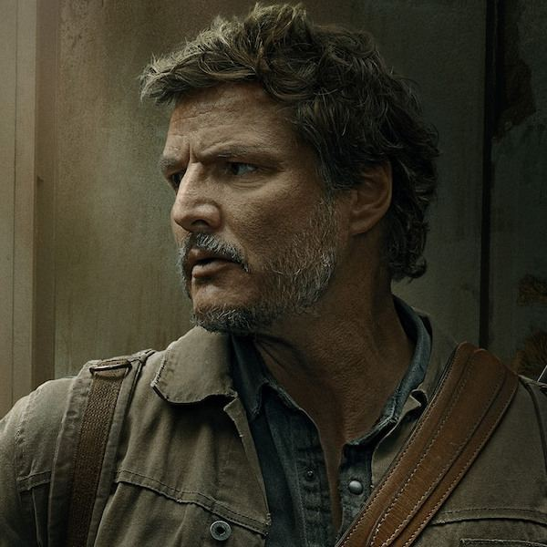
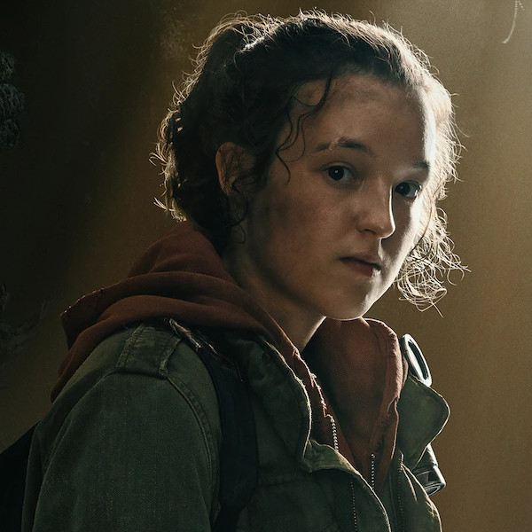
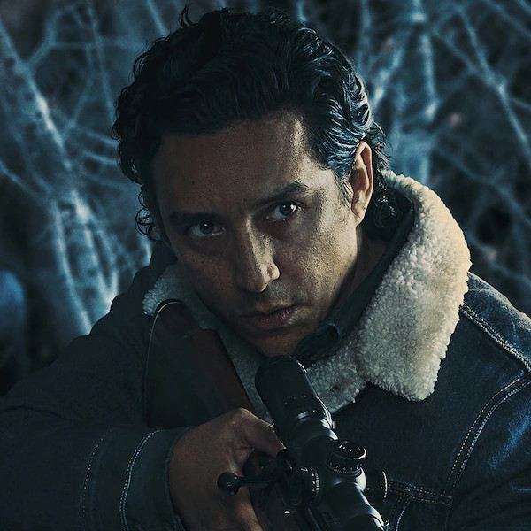
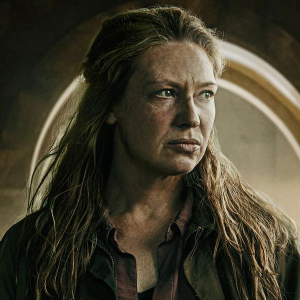
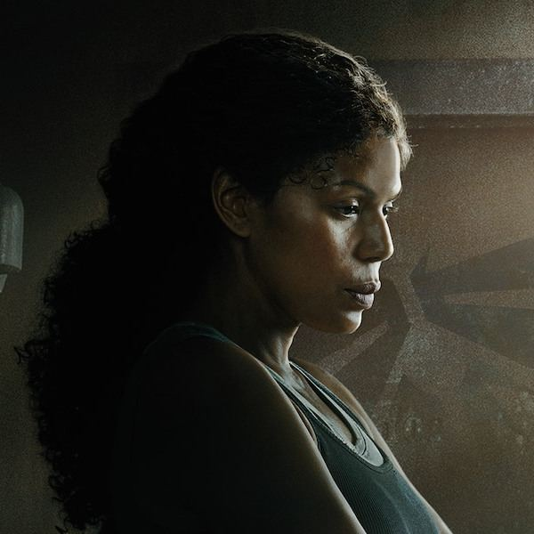
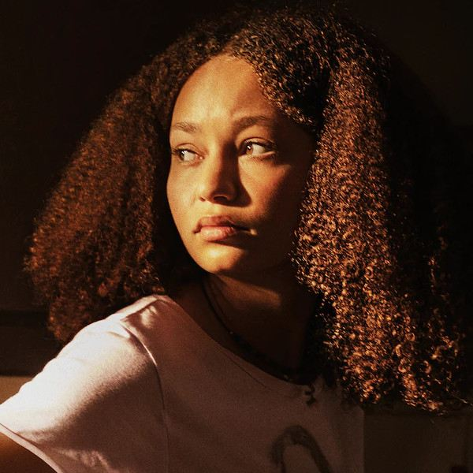
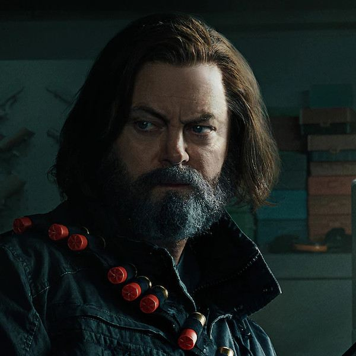
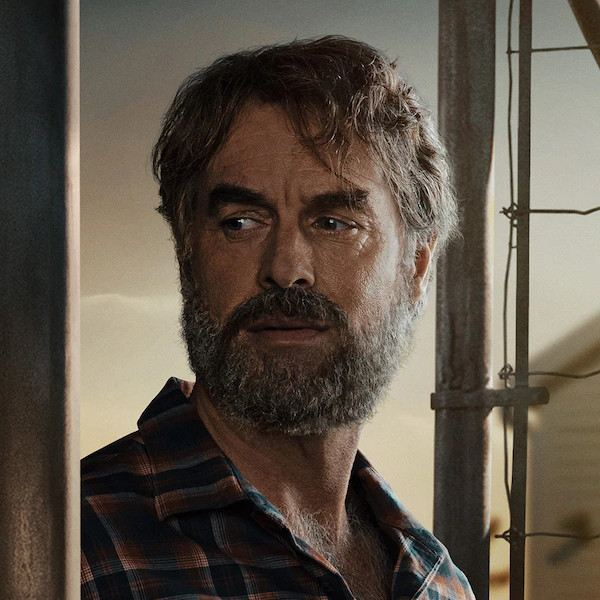
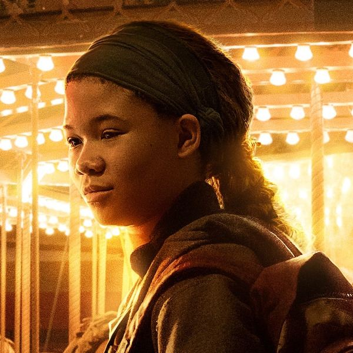
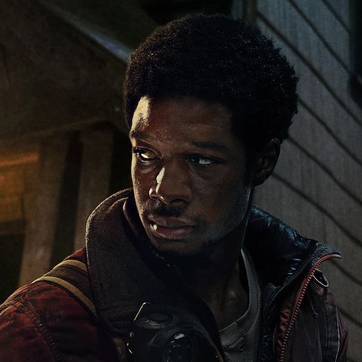
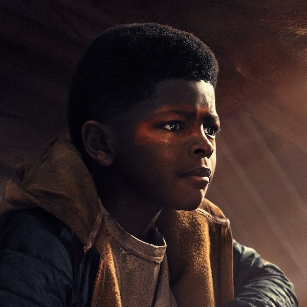
Criador de Chernobyl (HBO). Co-criou a série e hoje é o único showrunner, roteirista da 3ª temporada e diretor de sua estreia.
Diretor e roteirista dos jogos. Co-criou a série e dirigiu episódios, mas deixou as funções criativas em 2025 para se dedicar à Naughty Dog.
O compositor argentino, vencedor de dois Oscars, assina a trilha dos jogos e da série — o violão que virou a identidade da franquia.
Produtora de Chernobyl e Game of Thrones, ao lado de Asad Qizilbash e Carter Swan, da PlayStation Productions.
Co-roteirista de The Last of Us Part II, escreveu na 2ª temporada e também deixou a produção em 2025.
Produção conjunta com Sony Pictures Television, Naughty Dog, Word Games e The Mighty Mint.